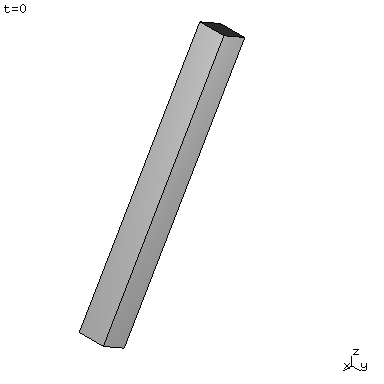

Pinned bar¶
| Reference: W. G. McLean, E. W. Nelson, C. L. Best, Schaum’s Outline of Theory and Problems Reference: of Engineering
Mechanics, Statics and Dynamics, McGraw-Hill Book Co., Inc., New York, NY, 1978, p. 336.
Analysis: Explicit dynamics, bilaterally constrained motion. Purpose: Examine the accuracy of an analysis involving spherical joints. Summary: A homogeneous bar, pinned at a distance a from one end, with total length \(L\), is subjected to gravity loading and released from rest at an angle \(\theta=30\deg\) from the vertical. The rotational speed when it passes through \(\theta=0\deg\) is calculated and compared to an analytical expression. |
The length of the spatial angular velocity vector at \(\theta=0\deg\) reads
\[\left|\omega\right|=\sqrt{\frac{0.402g_{3}\left(L-2a\right)}{L^{2}-3La+3a^{2}}}\]
provided the bar was released at \(\theta=30\deg\).

Fig. 15 The pinned bar in the initial configuration.
Input parameters¶
| Density \(\left(kg/m^{3}\right)\) | \(\rho=1\) |
| Square cross-section \(\left(m^{2}\right)\) | \(b\times b=0.1\times0.1\) |
| Length \(\left(m\right)\) | \(L=1\) |
| Distance to joints \(\left(m\right)\) | \(a=0.25\) |
| Gravity acceleration \(\left(m/s^{2}\right)\) | \(\mathbf{g}=\left[0,0,-9.8\right]\) |
Results¶
The time step used in the analysis is \(h=2^{-8}\). The hinge is modeled by a pair of spherical joints. The computations are terminated for the first n such that \(\theta\left(nh\right)\le0\) (interpolation of the results to the exact point \(\theta\left(t\right)=0\) is omitted). The table below summarizes the results
| Target | Solfec | Ratio | |
| Length of angular velocity when \(\theta=0\deg\,\, \left(rad/s\right)\) | 2.121 | 2.116 | 0.997 |

{kind=link}
Fig. 16 Animation of the pinned bar (reload page or click on image to restart).